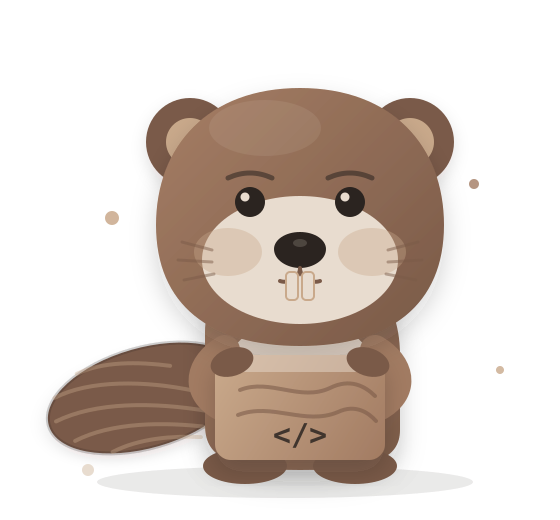

01
Standards first
Built directly on net/http and http.ServeMux. Predictable routing, familiar
behavior, and no framework-specific abstractions to unlearn.
The Go web library
Simple, lightweight, built on Go standards
A function-first web framework for dependable services. Routes, groups, and middleware that feel like the standard library—because they are.

Why Castor
A beaver builds with what the forest provides. Castor builds with what Go provides—clear functions, standard interfaces, and a foundation you can trust and test.
Built directly on net/http and http.ServeMux. Predictable routing, familiar
behavior, and no framework-specific abstractions to unlearn.
Handlers, middleware, and route groups are ordinary functions. Chain them together, keep the pieces small, no magic, and test each one on its own.
A tiny API surface, zero third-party dependencies, and graceful shutdown included. Fast to start, simple to maintain, easy to reason about.
Quick start
Castor keeps the happy path short. Define functions, wire them together, and let Go do the rest.
go get github.com/castor-go/castor
Handlers stay standard. Wrap them with castor.Get and return JSON with
castor.Json.
Start listens on port 3000, handles shutdown signals, and closes gracefully by
default.
package main
import (
"log"
"net/http"
"github.com/castor-go/castor"
)
func hello(w http.ResponseWriter, r *http.Request) {
castor.Json(w, map[string]string{
"message": "Hello from Castor!",
})
}
func main() {
app := castor.Server().
Routes(castor.Get("/", hello))
if err := app.Start(); err != nil {
log.Fatal(err)
}
}